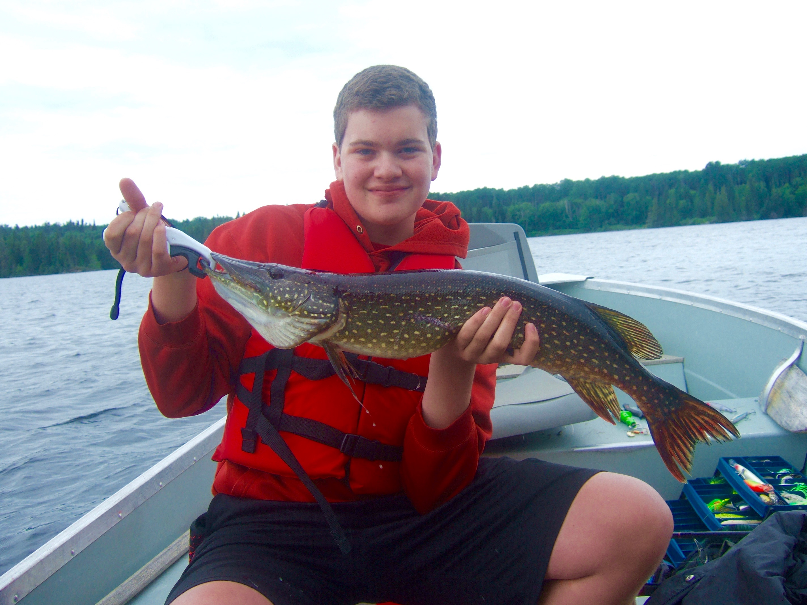

My name is Grant and I am a student at Mass Academy, class of 2020. I
live in Southborough, Massachusetts. Before Mass Academy, I went to
Algonquin Regional High School. My favorite subject is computer
science. Outside of school, my favorite things to do are fishing,
playing the saxophone, and hanging out with my friends. I was also an
invested member of my old school's robotics team. It was part of FIRST Robotics
Competition. I also did Programming Team at Algonquin. My team won
the 2017 Spring Fitchburg Programming Competition. I solved two of
the six problems on the four person team. My other teammates were all
seniors.
I have done a lot of volunteering this year. I have volunteered for the Southborough Youth and Family Services Summer Concert Series, Special Olympics, and Robotics. For the concerts, I sold t-shirts to help pay for underprivileged kids' summer camp. With Special Olympics, I was a referee for bocce and an announcer for softball. With robotics, I volunteered at many FIRST LEGO League competitions, and did field reset for the FIRST Robotics Competition New England District Championship. The vast majority of my volunteer hours came from robotics, as most of the events were multi-day, day-long events.
I've played my saxophone for 6 six years. I started playing jazz in seventh grade. I was lead alto in the Central District Junior Jazz Band. I was in Algonquin's Jazz II and Jazz I before I came to Mass Academy. While I may not listen to jazz for fun, I really enjoy playing it in a band. Genres of jazz I've played before include Be-Bop, Ballads, and Latin. The great thing about high school bands is that one is able to play a large variety of jazz without much commitment to one specific genre. At Mass Academy, I still play my saxophone despite the workload. I am a member of WPI's Jazz Workshop, a class dedicated to increasing students' ability in playing jazz. I will be able to learn a lot of things from this course, including how to better improvise over chord changes. If you are interested in joining this ensemble, email Professor Olsen

Fishing is one of my favorite hobbies. My biggest fish is a Northern
Pike that was 32 inches and 6.8lbs. I've been fishing since I was
four, when I first cast a hookless lure into a pond full of frogs.
Since then, I have traveled all over New England and Canada in search
of big fish. This summer I went to the Belgrade Lakes region in Maine
in search of monster smallmouth bass. My largest smallmouth was
19.5in and 4lbs. Other places where I have fished include Northern
Ontario Canada and the Kennebec River.